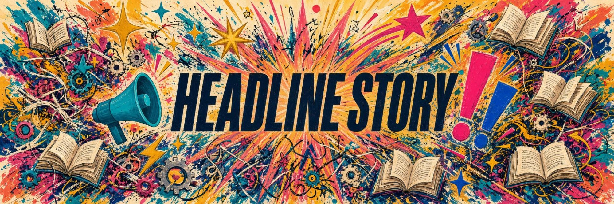
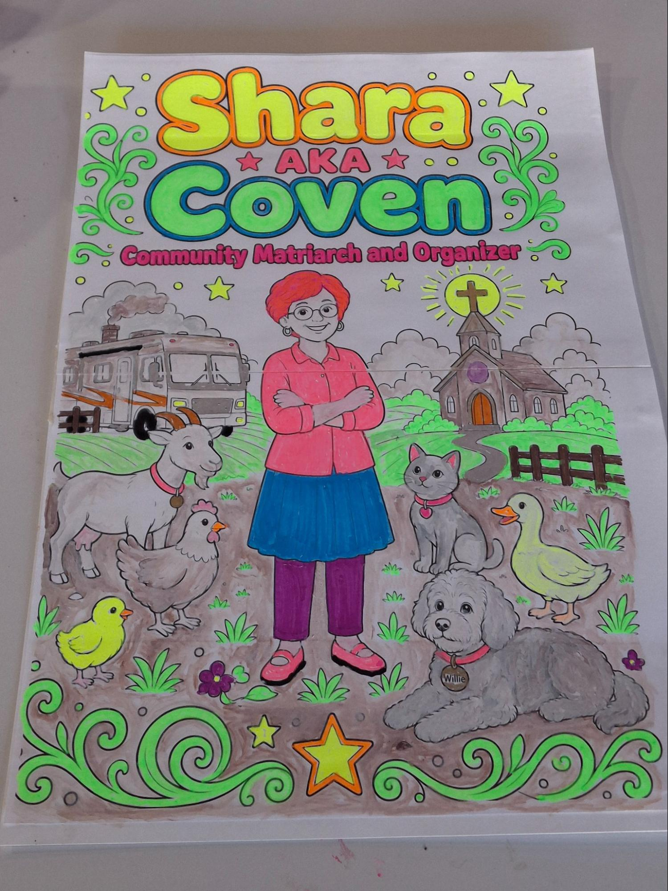
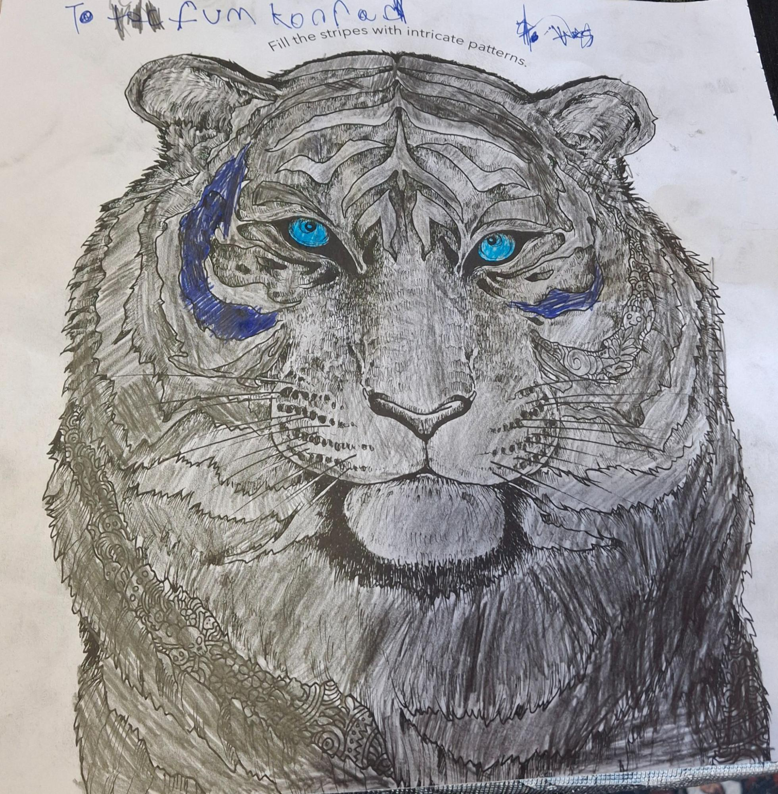
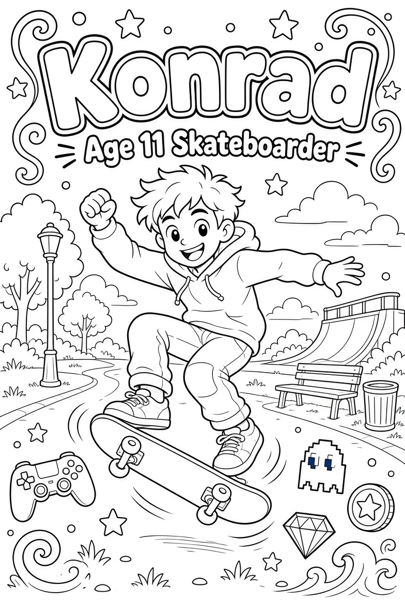
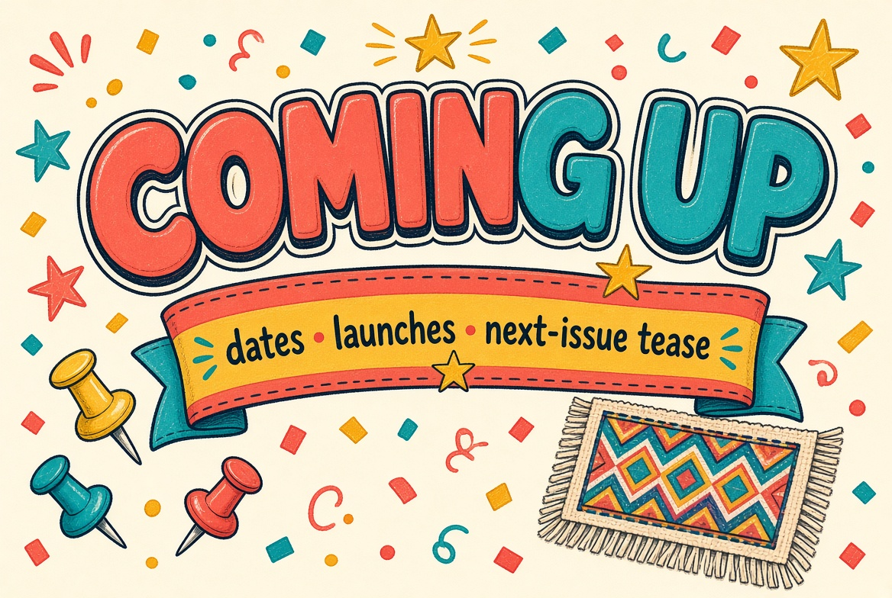
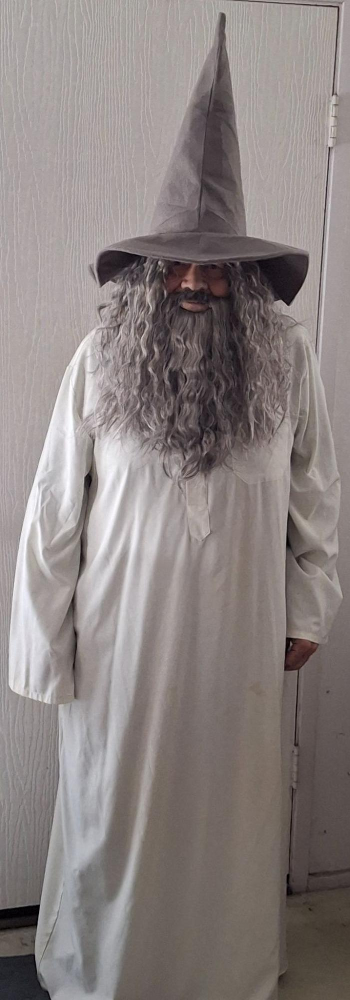
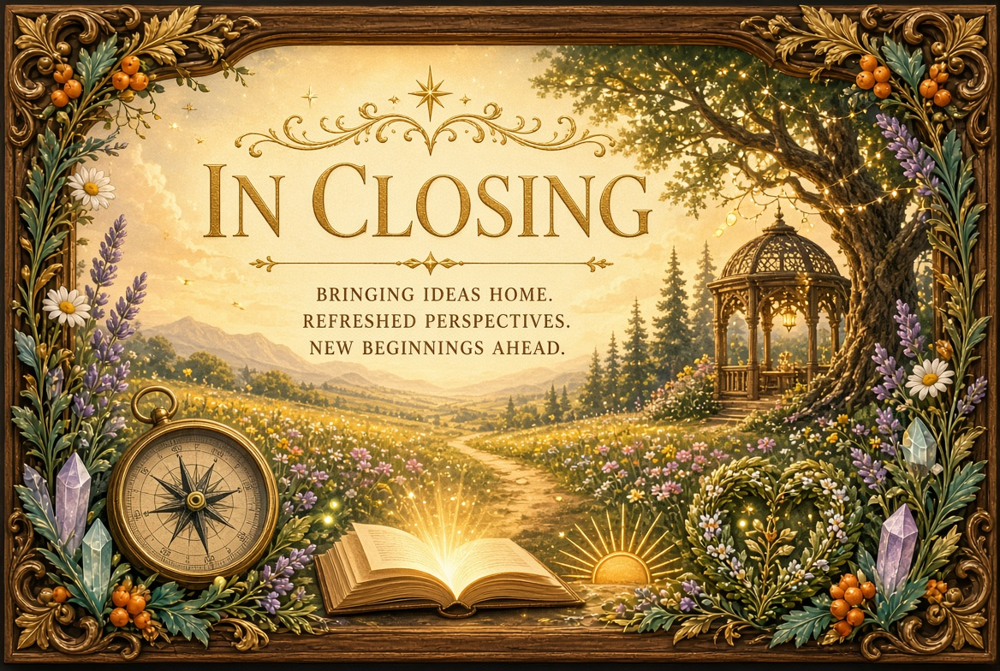

PEPPERWOOD COMMUNITY NEWSLETTER
Information & Entertainment to build community unity
This Edition Is A Reflection of My Transformation
I had a headline story only to take it down. It was the folklore I adhere to and pontificate. I did not finish the newsletter. It is probably as disjointed as I been this week,

The prophecy of 2026
Disclaimer: While Edgar Cayce did make various predictions about Earth changes, future shifts, and a period of spiritual awakening around this era, the detailed narrative about 2026 and modern politics circulating online is modern internet and social media folklore that has been retroactively attributed to him. It is a good review of where we are as a nation and society. Here is the link, Edgar Cayce’s SHOCKING 2026 Prophecy About Trump — Is It Coming True?
I spent the time to post a multi page article alleged to be from Edgar Casey because it resonated with my studies. I took it down because it is one more way we get distracted from our authenticity and the fulfillment of natural giving. It said during this critical period, every soul would have to make a choice—not a political choice between parties or candidates, but a spiritual choice between fear and love, When you can no longer trust anything external, when everything outside you is chaotic, only one option remains: to look within and connect with your own inner wisdom and your own divine connection.We are at a moment when we can evolve toward a new way of being or fall back into ancient patterns of conflict and separation.
He said, technology would reach a critical point at which it would become so advanced and so deeply integrated into our lives that we would have to make a collective decision: Will we control it, or will it control us?
For me it is a fun tool that enhances my creativity. It also creates a dependency. It controls us to the degree we allow it to separate us for our personal truth and authentic connection with others.
It said he spoke about what he called the new golden age—a period that would begin after the chaos of 2026, when humanity would finally remember its true nature and technology and spirituality would unite to create an entirely new civilization. This is my dream and vision. I have come out of my room to reconnect not only with my neighbors but reality.
The reality I have found is everything is as it should be. There is a man three doors down that stays busy with his door open,across the way they are in and out all times of the day. There is a wonderful couple across the way.The neighbor next to me is protective of their space. Mick makes his rounds, another neighbor walks by recovering from a surgery.
Up With the Owls

It’s 3 am and I am hearing the owls hooting and my housemate coughing. It is my creative time. In the night chill with the coldest darkest hour just before dawn. Back to sleep for my housemate, more coloring for me. I am redoing a poster for my friend Sarah. I worked a whole day to finish the 1st one only to realize I had spelled her name wrong. I wanted to blame it on AI but I reviewed the prompt and it was I who did the misspelling.
Life Is What Happens When You Are Busy Making Plans
John Lennon
Even though all my hopes and grand ideas seem to be a bust, they have manifested in neighbors who care. I feel the love and support in the waves and smiles that greet me daily. I have been blessed with close Neighbors Par Excellant. While the grand opening resulted in only two attendees, they were the right ones, they are now allies. This week I am reviewing the folklore presented as predictions of a psychic from eighty years ago. I agreed we are faced with an end times choice. To be blunt it is change or die. I chose life, what little there is left for me. I work every day to keep a positive vibe for those who will be left with the mess from a generation of decadence, who followed the plan of those whose intention it is to control us and maintain their privilege.
Indoctrinated from birth, we believed without evidence. Religion, politics, and the daily grind of wage slavery have robbed us of our authentic essence, my hopes for communities have been brought back home to the belief we change the world by changing ourselves. In this act of self love and preservation we can find our unity as individuals. Where I thought healing was changing what’s wrong. I am learning that healing is accepting, owning, and taking responsibility for what is.
We live in a bountiful mystical magical universe with everything we need for living life happy, joyous and free is held by gatekeepers that propagate and thrive in our belief that we are not enough, that salvation lies outside ourselves.
To survive, we need true Self-Government that requires mindful governing of the Self, and the joy and fulfillment of mutual aid. Healing comes through the heart; from emotionally authentic experience of releasing judgement and forgiving. With the past healed and living missions of service we can relate to each other with unconditional love, then we can form the interconnected communities to replace representative democracy with informed decisions and direct democracy.
We can get to the future of trust and abundance. Just not my way, Thank you for your presence and attention.
No News Is Good News
I haven’t any real news, just what I see out my door. Saturday donuts and coffee was Matt and myself. Chiwah was in Oregon, Blake was not feeling well, Shannon was at a baby shower, Mick turned down the offer, and AJ must have forgotten.
Next Saturday is Halloween. I won’t be buying more donuts unless someone shows up. I ate 8 last week. Not good.
People wave and smile. It has occurred to me that some people may not get me and all the talk about community. I feel a reality that doesn’t match my original magical thinking. Even I, in the face of reality, realize all I really want is a smaller version of my grandiose ideas: A group of friends to connect and have fun with.
I put a bag of cans by the recycle bins between me and Mick if anybody is still taking cans to recycle. They were gone the next day,


On a positive note my interest in the youth was rewarded with a friendship exchange with a young neighbor. I made him a poster to color and he gave me a piece of art he made.

Halloween Party


Lost My Mojo
The full moon square Pluto was not an energizing event for me. It was a lot of introspection and accepting reality does not match my magical thinking. Only Matt and myself attended Saturday coffee and donuts. My ideas of being a gathering place for the community have been scaled back to appreciating a connection with my Neighbors Par Excellant and the waves and smiles of people coming and going. Although I very much appreciate my renewed awareness of my neighbors,in a moment of wanting to talk on the phone I thought of a phone friendship that ended badly. I wanted to tell them I had recovered and was doing well, but it is not appropriate. The lack of closure from a 2 ½ years friendship has me faced with a grieving process. I share this to let you know I am ok. That maybe one of you may relate.